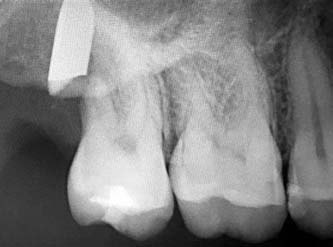
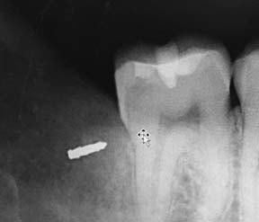
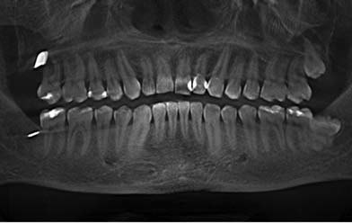
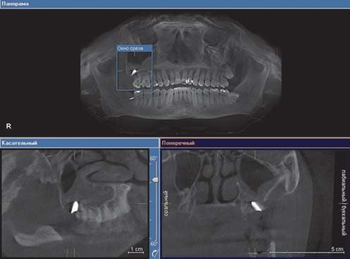
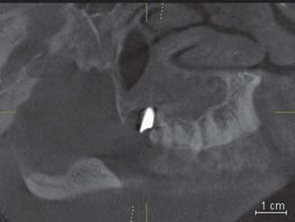
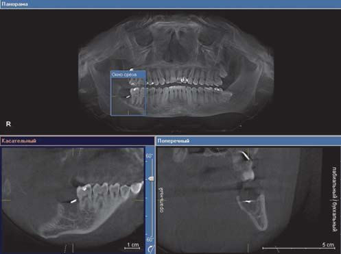
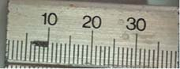
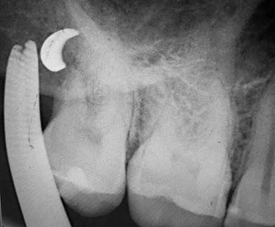
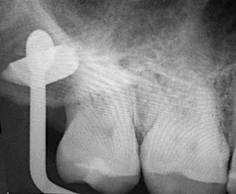
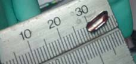

Практичний досвід · журнал «ДентАрт» 2021 №2
Сторонні тіла у верхній і нижній щелепах
FOREIGN BODIES IN UPPER AND LOWER JAWS
Сторонні об'єкти щелепно-лицьової локалізації з'являються переважно внаслідок травми або як ускладнення під час стоматологічних маніпуляцій. Найчастіше це наслідок дорожньо-транспортних пригод, осколкових поранень снарядами або наслідки попереднього лікування (забуті інструменти).1 Як свідчить статистика, найчастіше сторонніми тілами верхньої і нижньої щелеп є пломбувальний матеріал, який використовується для обтурації системи кореневих каналів. У середньому під час рентгенологічного огляду третина всіх сторонніх тіл залишається не діагностованою.2
Зазвичай для визначення локалізації сторонніх тіл щелепно-лицьової ділянки використовують панорамну рентгенографію. Лише при їх виявленні застосовують більш високоточні методи обстеження для точної локалізації предмета, такі як комп'ютерна томографія (КТ) і магнітно-резонансна томографія, електромагнітний металодетектор, ультразвукова діагностика.3,4,7 Вибором обстеження при визначенні локалізації стороннього тіла є КТ, вона дає можливість виявити металеві, пластмасові, скляні, графітні предмети, зуби та їх фрагменти, а також камені. За допомогою КТ не вдається визначити лише дерев'яні предмети, для цього використовують ультрасонографію, яка дає можливість виявити нерентгеноконтрастні об'єкти розміром понад 0,5 мм.7,8
За даними дослідження,5 де було проаналізовано понад 11800 панорамних знімків первинних пацієнтів, сторонні тіла виявлено у 0,6% (62 пацієнти). За локалізацією 17 (27%) сторонніх тіл були знайдені у правій верхній щелепі і 16 (26%) у лівій. У нижній щелепі 18 (29%) і 18 (29%) об'єктів були знайдені по лівий і правий бік. У 59 випадках (95%) сторонніми тілами були філери і силери для пломбування кореневих каналів, в інших випадках – шрапнель. У групі обстежених тільки 8 (13%) пацієнтів мали симптоми, які асоціюються зі стороннім тілом. Також у деяких пацієнтів було виявлено фрагменти ендодонтичних інструментів, але не в кістковій тканині щелеп, а безпосередньо в кореневих каналах.
Сторонні тіла щелепно-лицьової локалізації за походженням класифікують на:9
- травматичного походження (фрагменти снарядів, куль, голки та ін.);
- ятрогенного походження (зуби і фрагменти зубів, бори, зламані ендодонтичні та хірургічні інструменти, матеріал для пломбування кореневих каналів).
Вважається, що потрібно витягувати сторонні предмети у верхній і нижній щелепі тільки в тому випадку, якщо вони провокують ту чи іншу симптоматику.5
Усе ж основна причина присутності стороннього тіла щелепно-лицьової локалізації – ятрогенна. У літературі описано декілька випадків видалення сторонніх тіл верхньої і нижньої щелеп, найчастіше це були фрагменти твердосплавних борів, ендодонтичні силери, фрагменти зубів.6 Дуже рідко, але зустрічаються випадки виявлення і незвичайних предметів, таких як шматки металу розміром 7×2×1 см,10 дерев'яних зубочисток,11 швейних голок12 та ін.
Клінічний випадок, з яким зіткнулися ми, становить значний клінічний інтерес і не схожий на жоден з тих, які були описані раніше. Ми виявили відразу два сторонні предмети значних розмірів у кістковій тканині верхньої і нижньої щелеп у одного і того ж пацієнта.
Клінічний випадок
До нас звернувся пацієнт О., 25 років, сам лікар-стоматолог, зі скаргами на постійне відчуття свербіння у верхній і нижній щелепах праворуч, яке періодично переходило в тривалі ниючі болі, відкривання рота не в повному обсязі, часті головні болі, відчуття тяжкості у правій верхньощелепній пазусі, рясні серозні виділення з правого нижнього носового ходу, порушення загального самопочуття і зниження працездатності.
З медичної документації нам вдалося з'ясувати, що пацієнтові О. попередній лікар зробив атипове видалення зубів 18 і 48 з наступним ушиванням лунок видалених зубів. Призначено протизапальну та антибіотикотерапію.
Болі з'явилися 4 тижні тому, після видалення зубів 18 і 48. Реабілітаційний період проходив тяжко. Після видалення розвинулася запальна контрактура II ступеня, протягом першого тижня після видалення характер болю був постійний, ниючий. Загоєння постопераційних ран було повільним, рани довго не виповнювалися грануляціями. Пацієнт кілька разів протягом першого місяця після видалення звертався на консультацію до двох різних хірургів-стоматологів з переліченими вище скаргами. Місцевий статус був оцінений як задовільний, і було вирішено продовжувати динамічне спостереження за загоєнням лунок. Поскільки лунки зубів були виповнені грануляційною тканиною, що відповідало термінам загоєння, не було запальної гіперемії оточуючих м'яких тканин, явищ ексудації з лунок видалених зубів, пацієнтові призначили полоскання розчином Хлоргексидин Дента 0.12% тричі на день протягом 7 днів.
За даними об'єктивного обстеження, більшість показників відповідала нормі, окрім ринореї з нижнього носового ходу праворуч. Status localis без особливостей.
Ми зробили два прицільні внутрішньоротові рентгенологічні знімки в проєкції видалених зубів 18 і 48 (фото 1 і 2), після чого було виявлено наявність рентгеноконтрастних об'єктів у кістковій тканині нижньої і верхньої щелеп.


Для точного встановлення локалізації сторонніх об'єктів вирішено зробити КТ діагностику, зрізи КТ зображені на фото 3-6.

З урахуванням даних об'єктивного обстеження, скарг пацієнта, анамнезу захворювання і даних додаткових методів обстеження визначено діагноз: загострення хронічного правостороннього максиліту, стороннє тіло правого максилярного синуса. Стороннє тіло в нижній щелепі праворуч.
Колегіально було вирішено видалити обидва сторонні тіла.



Під мандибулярною і щічною анестезією зроблено гінгівотомію по середині верхівки альвеолярної частини нижньої щелепи, краї розрізу розведені тупо. Проведено кюретаж лунки видаленого зуба 48, під час якого отримано серозний ексудат, виявлено грануляції і було видалено стороннє тіло і грануляції (фото 7), гемостаз, зроблено ушивання місця розрізу.

Під туберальною і піднебінною анестезією зроблено лінійний розріз ясен по щічному боці альвеолярного відростка верхньої щелепи, краї розрізу розведені тупо робочою частиною вигнутого голкотримача, отриманий рясний серозний ексудат. Стороннє тіло містилося на рівні верхівок коренів зуба 17, біля дна верхньощелепного синуса, лежало не вільно, а пристінково й активно вклинено в кісткову тканину верхньої щелепи. Різними інструментами (голкотримач типу москіт, вигнутий пінцет, кюретажна ложка) ми намагалися зрушити стороннє тіло з місця, періодично роблячи контрольні рентгенологічні знімки в різних укладаннях для розуміння місця розташування об'єкта (фото 8, 9).


Після того, як нам вдалося зрушити стороннє тіло з місця і його не було видно з боку ротової порожнини, його локалізацію встановлювали, орієнтуючись на характерний металевий звук, який виникав при постукуванні по ньому кінцями бранш вигнутого металевого пінцета. Стороннім об'єктом виявився фрагмент робочої частини прямого елеватора довжиною 10 мм і шириною 4 мм (фото 10)! Проведено гемостаз, ушивання рани. Пацієнтові призначено протизапальну та антибіотикотерапію. Наступного дня після оперативного втручання пацієнт оцінив свій загальний стан як задовільний. Через 6 днів після видалення сторонніх тіл скарг на больові відчуття у верхній щелепі праворуч і відчуття свербежу в нижній щелепі праворуч не було.

У нашій практиці ми вперше зіткнулися з подібним випадком, і на нашу думку, він становить значний клінічний інтерес. Аналізуючи текстову базу даних PubMed при написанні статті, за запитом (foreign bodies in jaw bones) за період 1947-2020 рр. ми не знайшли жодного подібного випадку, коли у одного і того ж пацієнта було залишено відразу два сторонніх об'єкти у щелепно-лицьовій зоні в результаті дії ятрогенного чинника.
Виходячи з цього випадку, можна сформулювати такі рекомендації:
- При проведенні операцій видалення зуба, особливо атипових, слід ретельно оглянути видалений зуб та його альвеолу, зробити контрольну рентгенографію.
- Потрібно ретельно перевіряти цілісність інструментарію, використаного при видаленні зуба.
- При тривалому і млявому загоєнні лунки видаленого зуба, яке супроводжується різними больовими відчуттями, особливо тоді, коли оперативне втручання робили не ви, під час диференціальної діагностики слід враховувати таку нозологію (за МКБ-10), як – Y 61.0. Випадкове залишення стороннього тіла в організмі при виконанні хірургічної і терапевтичної процедури.
Література
- Clark J. C., Jones J. E. Tooth fragments embedded in soft tissue: A diagnostic consideration. Quintessence Int. 1987;18:653–4.
- Acharya S., Padhiary S. K. Foreign body in the mid-face: An unusual case report. Indian J Dent. 2012;3:156–8.
- Veselko M., Trobec R. Intraoperative localization of retained metallic fragments in missile wounds. J Trauma. 2000;49:1052–8.
- Ginsburg M. J., Ellis G. L., Flom L. L. Detection of soft-tissue foreign bodies by plain radiography, xerography, computed tomography, and ultrasonography. Ann Emerg Med. 1990;19:701–3.
- Omezli M. M, Torul D., Sivrikaya E. C. The prevalence of foreign bodies in jaw bones on panoramic radiography. Indian J Dent. 2015;6(4):185-189.
- Chen S., Liu Y. H., Gao X., Yang C. Y., Li Z. Computer-assisted navigation for removal of the foreign body in the lower jaw with a mandible reference frame: A case report. Medicine (Baltimore). 2020;99(3):e18875.
- Javadrashid R., Fouladi D. F., Golamian M., et al. Visibility of different foreign bodies in the maxillofacial region using plain radiography, CT, MRI and ultrasonography: an in vitro study. Dentomaxillofac Radiol. 2015;44(4):20140229.
- Abdinian M., Aminian M., Seyyedkhamesi S. Comparison of accuracy between panoramic radiography, cone-beam computed tomography, and ultrasonography in detection of foreign bodies in the maxillofacial region: an in vitro study. J Korean Assoc Oral Maxillofac Surg. 2018;44(1):18-24.
- Datarkar A. N., Dhawad M., Deshpande A. Unusual foreign body in mid face. J Maxillofac Oral Surg. 2015;14(Suppl 1):96-99.
- Datarkar A. N., Dhawad M., Deshpande A. Unusual foreign body in mid face. J Maxillofac Oral Surg. 2015;14(Suppl 1):96-99.
- Sahin Y. F., Muderris T., Bercin S., Sevil E., Kırıs M. Chronic maxillary sinusitis associated with an unusual foreign body: a case report. Case Rep Otolaryngol. 2012;2012:903714.
- Shao L., Qin X., Ma Y. Removal of maxillary sinus metallic foreign body like a hand sewing needle by magnetic iron. Int J Clin Pediatr Dent. 2014;7(1):61-64.